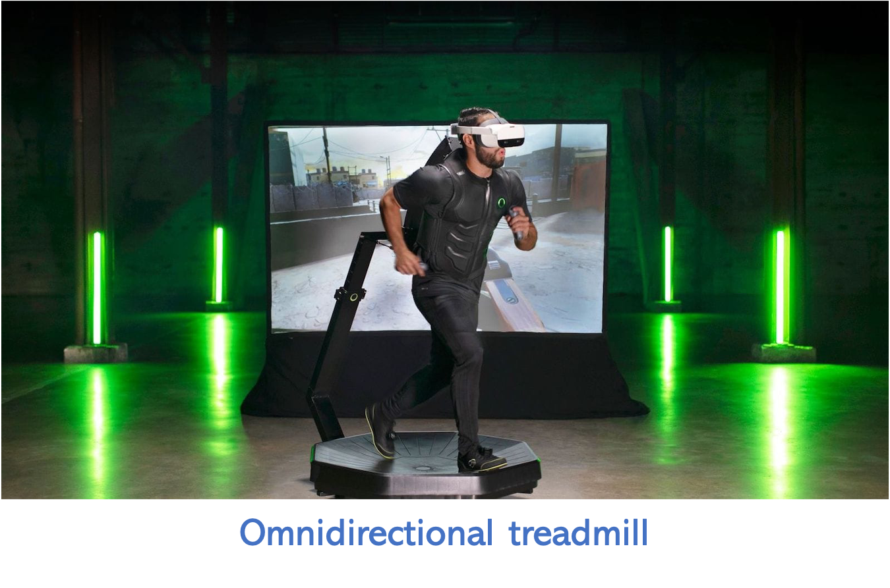
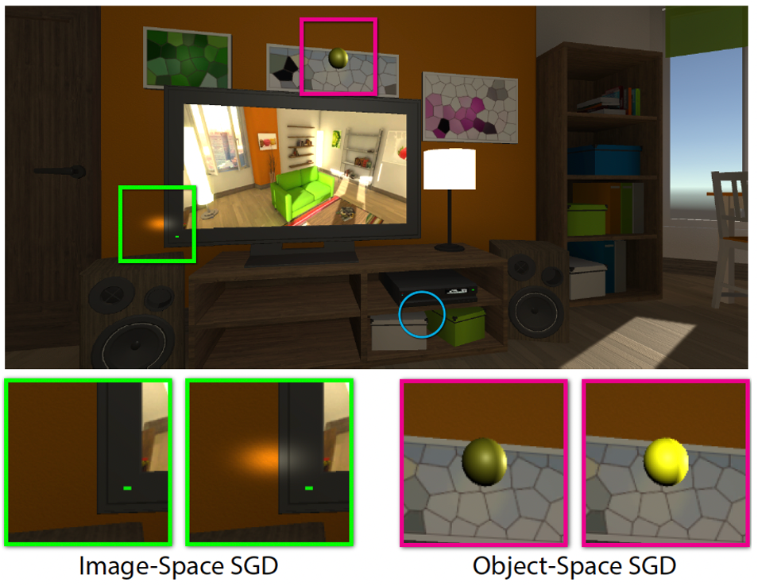
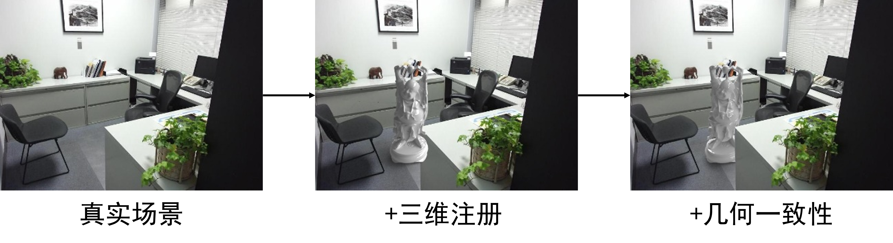

29.2. 虚拟现实与增强现实#
在当今数字时代，虚拟现实(VR)、增强现实(AR)以及混合现实(MR)这些术语越来越普遍，它们共同构成了扩展现实(XR)的概念。这些技术通过不同方式改变我们感知和互动的现实世界，开启了全新的交互体验。
虚拟现实(VR)是一种完全沉浸式的体验，用户通过头戴显示设备进入一个完全由计算机生成的场景。在这种环境中，现实世界被完全屏蔽，用户的视觉、听觉甚至触觉都被引导至一个虚构的世界。这种技术主要用于游戏、模拟训练以及教育等领域，提供了一个无界限的平台，让用户可以探索、学习和执行任务，而不受物理空间的限制。 增强现实(AR)技术则是在用户的现实世界中叠加计算机生成的图像或信息。通过智能手机、平板电脑或专门的 AR 眼镜，用户可以看到真实世界与虚拟对象的结合。这种技 术的一个著名例子是《Pokemon Go》，这款游戏将虚拟的宠物怪兽置入真实世界的地理位置中，玩家需要在物理世界中移动来捕捉它们。AR 技术广泛应用于导航、教育、零售和娱乐等领域，通过增强现实世界的信息，提高用户的互动和认知效率。
混合现实(MR)则进一步扩展了 AR 的概念，它允许用户在虚拟环境中与真实世界的 物体进行互动。这种交互可以通过特定的头戴设备实现，如微软的 HoloLens，用户不仅可 以看到真实和虚拟世界的融合，还可以用手直接操作虚拟元素。MR 技术为工业设计、医 疗、教育等行业提供了强大的应用潜力，使得复杂的数据和模型可以在真实环境中被直观 地展示和操作。
扩展现实(XR)是一个包括 VR、AR 及 MR 所有形式的综合术语。XR 涵盖了从完 全虚拟到部分增强的所有现实交互形式，它的目标是通过提供更加丰富、多元的互动方式 来增强人类的感知能力和操作效率。
通过这些技术，我们可以预见一个未来，在这个未来中，人们的学习、工作和娱乐方式 将被彻底改变。虚拟现实与增强现实技术的发展不仅仅推动了技术界的边界，更拓展了我 们对现实世界的理解和认知。
29.2.1. 虚拟空间体验：空间重映射与重定位行走#
在虚拟现实中，用户的位置和姿态估计不仅需要精确而快速，还需创新技术来扩展用户的活动空间，尽管物理空间有限。本节将介绍如何通过先进的技术实现虚拟空间的无限体验和对用户感知的巧妙操控。

图 29.10 全向跑步机Virtuix Omni。#
无限的虚拟空间体验——全向跑步机 ：全向跑步机如Virtuix Omni（如图 29.10 所示），提供了真实行走的体验而不离开原地，使得用户可以在物理空间受限的情况下，在虚拟环境中自由移动。这种设备是通过一个能够检测步伐方向和速度的低摩擦平台来实现的，用户佩戴专用鞋或滑动设备，可以在虚拟世界中自然行走、跑步或转身。
空间重映射与重定向行走技术 ：重定向行走技术是一种创新的解决方案，利用用户在空间感知上的不精确性，通过微妙的视觉或运动提示让用户在虚拟世界中行走更远的距离，而实际上只在较小的物理空间中移动。这种技术可以有效地扩展虚拟环境的探索范围，提高空间利用效率。
被动重定向：当用户行走时，系统微妙地调整虚拟环境，让用户无意识地改变方向。这种调整足够细微，以至于用户往往不会察觉到自己的行进路径已被轻微调整。
主动重定向：在用户进行如眨眼或扫视等视觉暂时失明的动作时，系统加速进行空间调整。这种方式利用了用户视觉注意力的短暂转移，实现更大范围的空间调整。

图 29.11 Subtle Gaze Direction（SGD）方法。#
在感知失明时的空间调整——实时眼动追踪与空间调整 ：利用高级眼动追踪技术，系统可以在用户眨眼或扫视时精确地检测到这一行为，随后实时调整虚拟环境的方向或位置。这种方法可以在用户几乎不察觉的情况下，改变他们在虚拟空间中的实际位置，从而避免物理空间的限制。如图 29.11 所示，Subtle Gaze Direction（SGD）：这种技术通过在用户的视野外围进行细微调整，诱导用户的视线转向特定区域。这不仅可以用于大型展览中心引导参观者的视线，还可以在VR中应用，通过控制视线方向和扫视行为来调整用户在虚拟环境中的方向和位置。
优化空间重映射算法 ：未来的空间重映射技术需要更加智能化，能够实时适应用户的行为和环境变化。通过集成更高级的传感技术和深度学习算法，系统可以更精确地预测用户的移动意图和可能路径，从而提前进行空间调整，确保虚拟环境的连贯性和真实感。此外，算法优化还需要考虑减少对用户认知和感知的干扰，使重定向行走更自然、不易被察觉。
设备精确性与反应速度的提高 ：随着硬件技术的进步，未来的VR设备将提供更高的精确性和更快的反应速度。这包括更高分辨率的眼动追踪系统、更灵敏的运动传感器以及更快速的处理器，这些都是实现复杂空间重映射技术的关键。高精度的传感器和快速的反应能力能够确保虚拟环境中的任何微小调整都即时且精确地反映用户的实际动作，增强沉浸感和现实感。
用户体验的舒适性和自然性 ：提高用户体验的舒适性和自然性是VR技术发展的另一个重要方向。这不仅涉及硬件设计的人体工程学优化，如更轻便的头显和更适合长时间佩戴的材料，还包括软件界面的用户友好性改进。例如，通过改进用户界面（UI）和用户体验（UX）设计，使得用户在进行复杂的虚拟操作时感觉更直观和轻松。此外，对VR环境的声音、光影和质感进行真实的模拟，也是提升自然性的关键。
综合应用和跨领域融合 ：随着VR技术的成熟，其应用领域将进一步扩展，不仅限于娱乐和游戏，还将深入到教育、训练、医疗和工业设计等多个领域。跨领域的融合将推动VR技术与其他先进技术如人工智能、大数据和物联网的结合，共同创造出全新的应用场景和用户体验。
29.2.2. 虚拟-现实融合：三维注册技术#
虚拟-现实融合是增强现实（AR）和混合现实（MR）中的关键技术，目标是将虚拟物体无缝、自然地集成到现实环境中。这一过程涉及多个层面的技术挑战，包括光影一致性、几何一致性和交互一致性，所有这些都依赖于精确的三维注册技术。本节将详细探讨这些技术的实现方式和相关的技术细节。

图 29.12 三维注册。#
三维注册 ：（如图 29.12 所示）：三维注册是将虚拟物体准确地放置和定位于现实世界的过程，它是虚拟-现实融合的基础。在AR和MR应用中，这通常通过使用二维码或其他形式的标记（markers）来实现，这些标记作为现实世界中的参考点，帮助系统确定虚拟内容的具体位置和方向。在更高级的实现中，也可采用特征点阵列，类似于VR中的红外特征点系统，以增强定位的准确性和稳定性。

图 29.13 光影一致性。#
光影一致性 ：（如图 29.13 所示）：光影一致性确保虚拟物体在现实世界中的光照效果与其周围环境匹配，从而增强真实感。实现光影一致性通常涉及以下技术：
光照重建：使用传感器捕捉现场的光照条件，例如光强度和方向，然后在渲染虚拟物体时模拟这些光照条件。
真实感渲染：采用高级渲染技术，如光线追踪或全局光照算法，确保虚拟物体的阴影和高光与现实环境中的光线完美融合。

图 29.14 几何一致性。#
几何一致性 ：（如图 29.14 所示）：几何一致性涉及确保虚拟物体在物理空间中的尺寸、位置和方向准确无误。这需要精确的物体位姿估计与跟踪、场景多属性建模以及场景理解。技术实现通常包括：
物体位姿估计与跟踪：使用各种传感器和算法持续跟踪虚拟物体在空间中的位置和姿态，确保其与现实世界中的对象保持准确的相对位置。
场景多属性建模：建立一个包含各种物理属性（如材质、结构、光反射特性）的场景模型，用于增强虚拟物体与真实环境之间的交互。
实时交互与自然交互 ：为了实现用户与虚拟内容的自然交互，系统需要集成高级的交互技术，包括：
手势识别：利用摄像头或专用硬件捕捉和解析用户的手势，使用户能够直观地操作虚拟物体。
语音识别：允许用户通过语音命令与虚拟内容交互，提供一种无需物理接触的交互方式。
眼球追踪：通过分析用户的视线方向，系统可以理解用户的注意焦点并相应地调整虚拟内容。 这些技术的整合不仅使得虚拟对象与真实世界的融合更加无缝，也极大地提高了用户体验的自然性和直观性。
场景理解与物理仿真 ：深入的场景理解能够支持更复杂的交互，包括物理仿真，这是实现几何一致性和交互一致性的关键：
场景理解：高级的视觉和数据处理算法可以分析环境数据，识别和解释物理空间的布局和物体属性。这包括物体识别、空间关系理解和环境动态变化的感知。
物理仿真：在虚拟物体与现实世界交互时，确保其行为符合物理规律，如碰撞、重力和材料互动。这不仅增强了虚拟物体的真实感，也使用户的交互更加自然和可预测。
技术挑战与发展趋势 ： 尽管虚拟-现实融合技术已经取得显著进展，但在实现完全自然和无缝的融合方面仍面临若干技术挑战：
环境动态性应对：真实世界的环境是不断变化的，有效地处理这些变化对于维持光影和几何一致性至关重要。需要更快速和精准的环境感知和更新机制。
增强的渲染技术：为了提供更加真实的视觉效果，需要进一步改进渲染技术，尤其是在移动设备上实现高质量的光线追踪和全局光照算法。
交互延迟降低：实时交互对系统的响应速度要求极高，任何延迟都可能打破用户的沉浸感。优化系统架构和算法以减少延迟，是提升用户体验的关键。
未来，随着计算能力的提升和算法的优化，虚拟-现实融合技术将更加成熟，使得AR和MR设备更加实用和普及。这将推动从娱乐和游戏到教育、工业和医疗等多个领域的革新，开辟虚拟和现实交互的新时代。